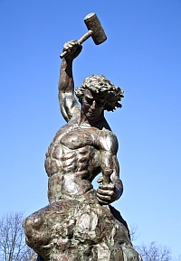

Que es la Masoneria
Sociedad filantrópica, filosófica y progresista. Sus objetivos: la exaltación y el perfeccionamiento de
las más elevadas virtudes humanas.
La Orden asienta sus principios en los ideales de Libertad, Igualdad y Fraternidad; y considera que el
hombre puede alcanzar su realización a través de la Ciencia, la Justicia y el Trabajo (trilogía que
constituye su lema). Estos ideales, que en el seno de nuestra Institución no sólo se expresan sino que
se hacen realidad, fueron los que inspiraron a hombres de todos los tiempos a la hora de enfrentar y
combatir regímenes opresores, despóticos o que negaban la dignidad de la condición humana.
Valiéndose de una tradición iniciática compuesta por símbolos y alegorías, el lenguaje masónico trata de
operar en lo profundo de la conciencia para sacar a la luz aquellos arquetipos que distinguen a los
hombres cabales. De esta forma la Masonería se erige en defensora del progreso de la humanidad, y se
manifiesta acérrima enemiga de la ignorancia, el fanatismo y la codicia.


¿Cuales son los requisitos para ingresar a la Masonería?
Para ingresar a la Masonería no es necesario poseer fortuna, ni conocimientos o aptitudes intelectuales extraordinarias, ni dotes morales excepcionales. Los únicos requisitos mínimos exigidos son los siguientes: Ser hombre libre y de buenas costumbres; Tener una edad mínima de 18 años. Poseer inteligencia y cultura necesaria para comprender y practicar las virtudes masónicas; Contar con medios de subsistencia para sufragar sus necesidades, las de los miembros de su familia y/o personas que tuviera a su cargo.
¿Qué significa: Hombre libre y de buenas costumbres?
Hombre libre es aquel que tiene libertad para expresar sus pensamientos, no acepta imposiciones que atenten contra sus principios, ni está sujeto a la voluntad de un tercero; no está atado a ningún dogma que oscurezca su inteligencia y pervierta sus sentimientos, y carece de vicios que lo esclavicen. Para ser hombre de buenas costumbres deberá obedecer las leyes del país en que reside, venerar a su patria, y honrar a su familia; ser tolerante y respetuoso con las ideas políticas y religiosas de sus semejantes. Imponerse la seriedad de los conceptos, el decoro de las formas y observar una conducta moral y la ética en su vida privada y pública. Y para esa lucha que ya tenemos instalada y con la que ingresamos al nuevo milenio, nuestra Orden cuenta con sobrados elementos, expresados en tradiciones, principios, símbolos, doctrina y, lo más importante, hombres masones para hacerle frente con suficiencia en la medida que concienticemos este fenómeno y recreemos algunas básicas cuestiones propias, que desgranaré de inmediato comenzando por nuestro orden interno.
Nuestro Gran Símbolo
Punto B. del Acuerdo de Union entre GRAN LOGIA DE LA MASONERIA y GRAN ORIENTE FEDERAL ARGENTINo.
Suscripto en Buenos Aires, el 30 de agosto de 1956.
La Invovaion del G∴A∴D∴U∴ en nuestros trabajos no implica la creencia en el dios de una religion
determinada,
ya que la masoneria proclama como Gran Arquitecto del Universo al reconocimiento de un Princio o una
causa primera, dejando en libertad a cada uno de sus miembros, los puntos de vista particulares sobre la naturaleza de este principio, y se absetiene de todo acto confesional.
Por ello, en la columna de las promesas se colocara la BIblia, o cualquier otro libro de una religion reconocida, justamente con la escuadra, el compas, la Constitucion Nacional Argentina y la de la Orden.
En consecuencia, cada Mason de acuerdo con sus conviciones, puede elaborar su propia concepcion de estos simbolos, sin imposiciones de cualquier credo o religion.